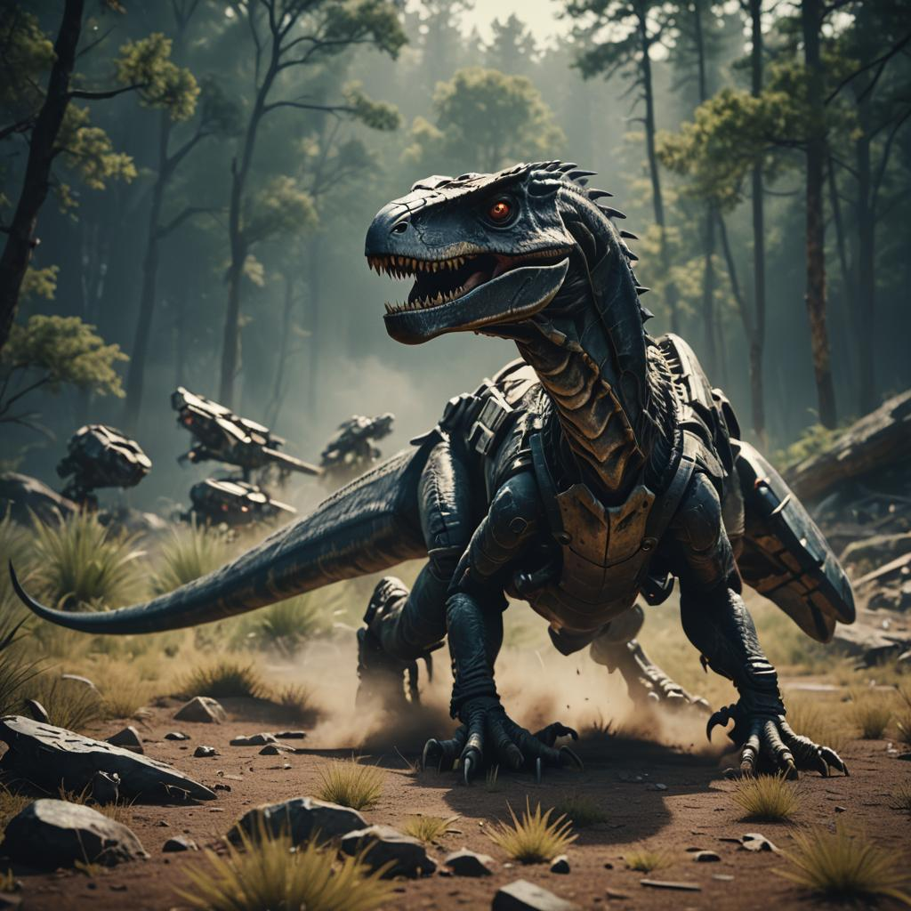

Artykuły
Zbior artykułów na tematy związane z tworzeniem gier.
Autor: Aleksander Nowak
Data: 11 maja 2024
Kategoria: Trendy w branży gier komputerowych
Opis: Artykuł przedstawia rosnącą popularność gier wspinaczkowych w branży gier komputerowych. Omawia trendy, nowe tytuły oraz ich wpływ na społeczność graczy. Autor analizuje rozwój tej kategorii gier oraz prognozuje jej przyszłość na rynku.

Autor: Marta Kowalska
Data: 08 maja 2024
Kategoria: Podstawy tworzenia gier
Opis: Artykuł przedstawia przewodnik dla początkujących deweloperów gier.
Autor: Akari Aozora
Data: 25 kwietnia 2024
Kategoria: Pisanie gier w Unity
Opis: Praktyczny Przewodnik Z Kodami Dla Początkujących.